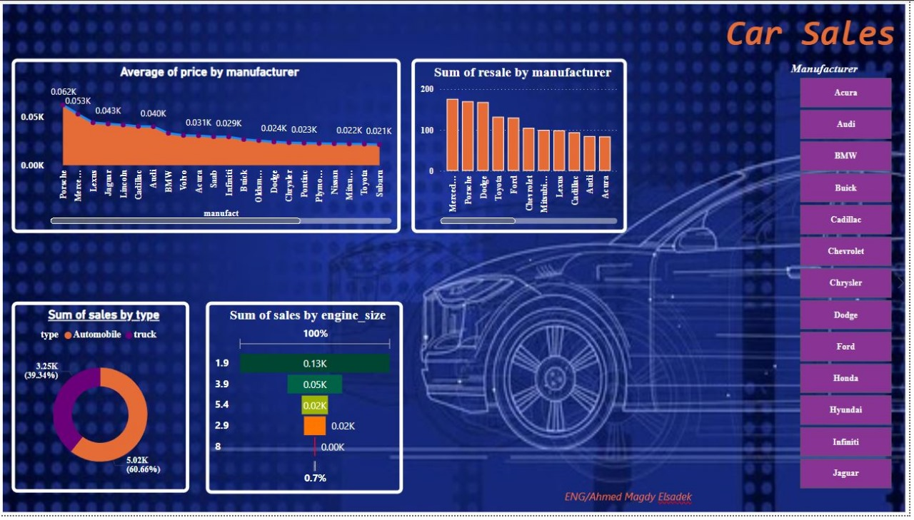

Car Sales Dashboard
Analyzing vehicle resale trends, engine sizes, and manufacturer statistics.

Sales Analytics Dashboard
A dashboard showing total sales, profits, and order insights across multiple regions.

Movies Insights Dashboard
Analyzing top movies by revenue, genre, and certificates using Power BI.

Lung Cancer Dashboard
Interactive dashboard showing treatment outcomes, survival status, and patient data by country.

Supply Chain Analytical Dashboard
Dashboard includes manufacturing, shipping, and sales performance insights across four interactive visuals.

Customer Satisfaction Analysis (SPSS)
Statistical analysis using SPSS to measure satisfaction with a telecom e-wallet based on a sample of 50 users.